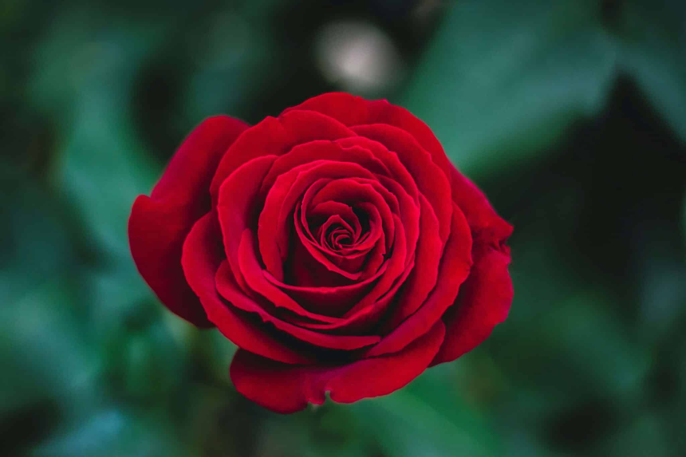
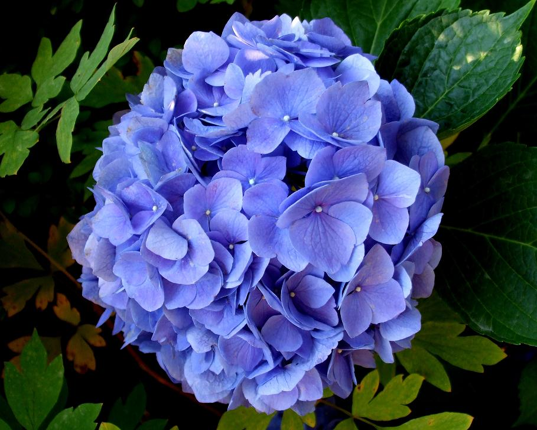
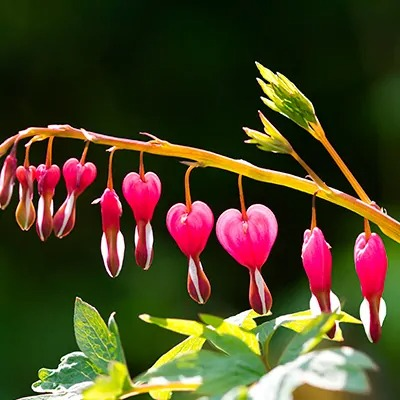
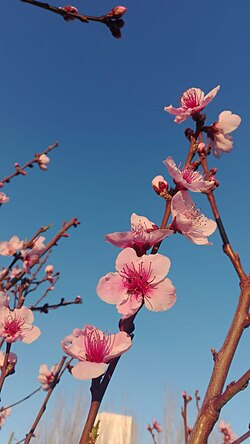
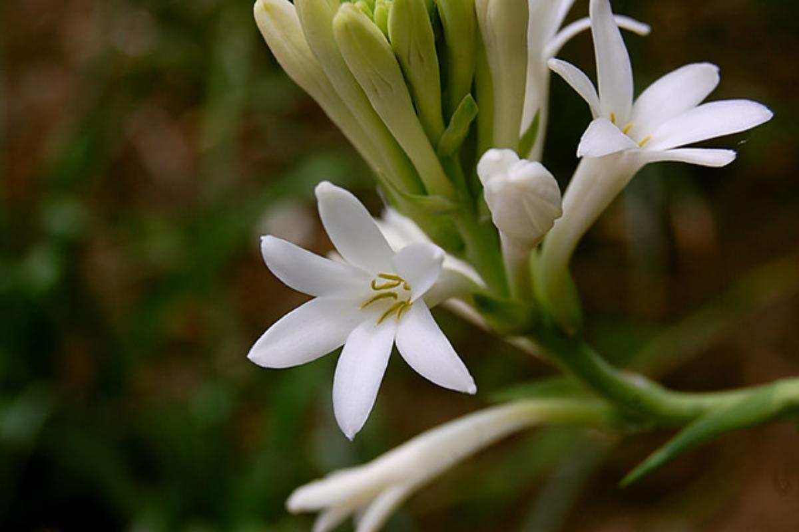
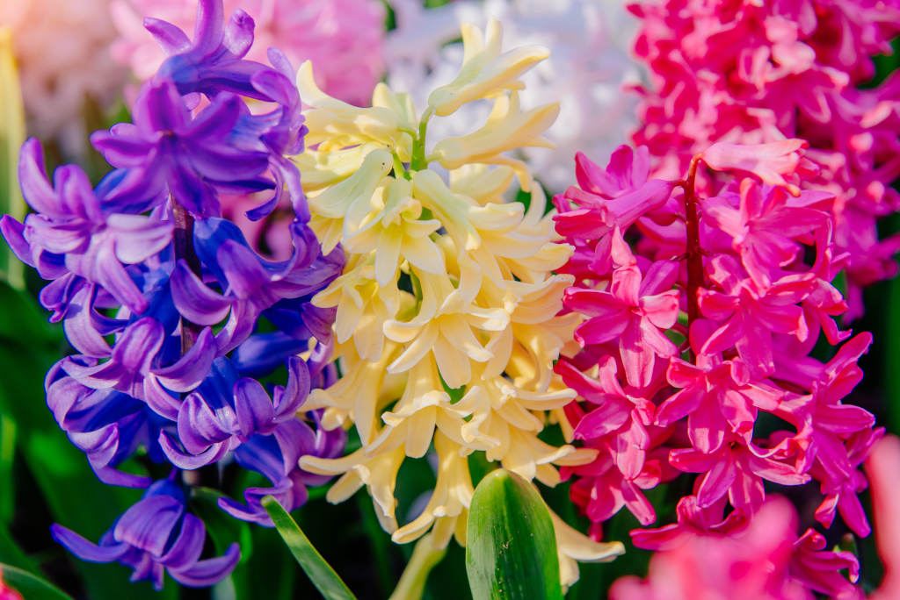

Las flores mas bonitas del mundo

La rosa, conocida como "la reina del jardín", es una flor hermosa y popular en todo el mundo, usada en decoración y perfumes.

La hortensia, originaria del sur de Asia, es una flor muy apreciada por su belleza, volumen y uso decorativo en bouquets.

La flor ‘corazón sangrante’, originaria de Asia, es una flor única y llamativa aunque poco conocida.

La flor de cerezo, símbolo cultural de Japón, destaca por su belleza en tonos rosa y blanco y su presencia en los árboles sakura.

El nardo, también llamado ‘vara de San José’, es una flor elegante muy usada en bodas e iglesias por su belleza y aroma.

Los jacintos destacan por su belleza, fragancia envolvente y colores vibrantes, siendo símbolo de la primavera y la perfección floral.